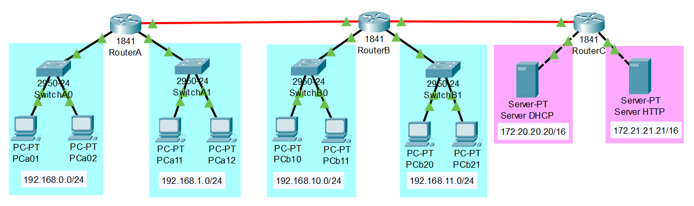
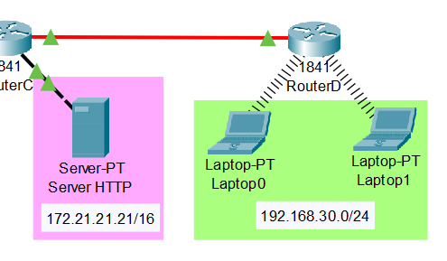

Objectifs pédagogiques
L'objectif principal de ce sujet de travaux pratiques est de comprendre les principes d'emploi du protocole RIP de gestion dynamique des routes dans un réseau local.
On se place dans l'exemple d'une dorsale reliant 3 routeurs-passerelles :
- en configurant d'abord des routes statiques, avec un choix judicieux des adresses pour pouvoir procéder par agrégation de routes ;
- puis en reconfigurant les routeurs pour qu'ils fassent appel au protocole RIP, d'abord version 1 limité à l'adressage classfull ;
- puis, en recourant à la version 2 qui permet d'attribuer des adresses CIDR (classless) pour les routeurs.
Un objectif secondaire est de découvrir la simulation des routeurs Wi‑Fi et des connexions au réseau par liaisons sans‑fil.
Ce sujet de travaux pratiques est aussi l'occasion de réviser la mise en place d'un serveur DHCP et d'un serveur web, abordée dans le sujet de TP R2‑1 .
Pour traiter ces exercices, il est recommandé d'avoir étudié les chapitres R3‑I et R3‑II du cours. Des renvois aux principaux éléments de cours ou à des pages web d'information générale sont donnés au fur et à mesure des questions.
Mise en situation
Environnement

Tous les exercices sont à traiter dans l'environnement de simulation Cisco Packet Tracer. Ce logiciel gratuit doit être préalablement téléchargé et installé sur le poste travail (cf. chap. R1‑II ).
Travail demandé
Effectuer les manipulations sur ordinateur en veillant à enregistrer au fur et à mesure le travail dans un fichier distinct pour chaque exercice et parfois chaque question. Il est recommandé de nommer ces fichiers de la forme R3tp1exon.pkt où n est le numéro d'exercice.
Les exercices étant conçus en continuité l'un après l'autre, il est vivement recommandé de partir d'une sauvegarde du fichier .pkt de l'exercice n pour traiter l'exercice n + 1.
Quant aux questions qui attendent une réponse littérale, il est conseillé d'y répondre sur cahier ou fichier de texte.
- Mise en place de la dorsale en routage statique 
- Dans la vue « logique » de l'espace de travail, constituer la topologie matérielle de réseau constituée de 6 segments, représentée en figure ci‑dessus, sachant que la dorsale reliant les routeurs doit être câblée en Gigabit Ethernet. Pour cela, il est préalablement nécessaire de rajouter des interfaces à leur configuration physique.
- Configurer les routeurs passerelles comme indiqué ci‑dessous.
- Procéder à l'adressage statique IPv4 des interfaces réseaux :
- en respectant les adresses des segments spécifiées sur la figure pour les interfaces Fast Ethernet ;
- en choisissant judicieusement des adresses privées (cf. chap. R1‑III ) pour les interfaces Gigabit Ethernet.
- Ajouter toutes les routes statiques nécessaires en utilisant autant que possible la technique d'agrégation des routes .
- Vérifier alors en simulation temps‑réel que toutes les interfaces des routeurs vers les segments peuvent communiquer entre entre elles, en utilisant la commande
pingen CLI (command line interface). - Sauvegarder la configuration de chaque routeur dans sa mémoire NVRAM (non volatile RAM).
Attention ! Pour ne pas avoir à changer tout le plan d'adressage de la dorsale à l'exercice 2, on choisira des réseaux dont les adresses sont classfull, par exemple en192.168.10x.0/24où le digitxchange pour chaque liaison.Attention ! Ne pas oublier les routes vers les réseaux formant les liaisons de la dorsale.À titre indicatif, combien de routes faut‑il renseigner en tout ? Sachant le nombre de mots de 32 bits pour définir une adresse, combien de mots faut‑il renseigner en tout ? - Configurer tous les PC en choisissant l'option DHCP en IPv4.
- Configurer le serveur DHCP comme indiqué ci‑dessous.
- Procéder à l'adressage statique IPv4 de son interface réseau conformément à l'adresse spécifiée sur la figure supra.
- Activer le service DHCP et désactiver tous les autres services.
- Réserver pour chaque segment des PC une plage de 20 adresses à partir de l'adresse nº 50.
- Configurer les interfaces des routeurs A et B vers les segments des PC en relais DHCP (cf. cours, chap. R2‑II et sujet de TP R2‑1 ).
- Vérifier alors en simulation temps‑réel que tous les PC disposent d'une adresse IP conforme aux plages dynamiques configurées dans le serveur DHCP et qu'ils peuvent communiquer entre eux par appels de la commande
pingen command prompt.
(Penser à sauvegarder la configuration des routeurs après chaque nouvelle modification.) - Configurer le serveur web avec l'adresse statique IPv4 spécifiée sur la figure supra. Supprimer tous les services sauf le service HTTP.
- Emploi du protocole de routage dynamique RIP
- Reconfigurer les routeurs‑passerelles :
- Supprimer toutes les routes statiques.
- Sur chacun des trois routeurs, dans la fenêtre de configuration du protocole RIP (cf. chap. R3‑II ), ajouter l'adresse des réseaux auquel il est raccordé. Sauvegarder cette nouvelle configuration en NVRAM.
- Vérifier maintenant que tous les PC peuvent communiquer entre eux par appels de la commande
pingen command prompt. - Sur chacun des trois routeurs (en mode enable, hors configuration), appeler la commande
show ip routeen CLI. Repérer les routes déterminée par le protocole RIP.
En comparaison avec la question 1.b), combien d'adresses (et donc, de mots de 32 bits) faut‑il renseigner en tout ?

- On souhaite procéder à l'extension du réseau en installant un routeur‑passerelle supplémentaire (noté
routerD) équipé d'un module d'interface WLAN W (wireless local area network), conformément à la figure ci‑contre. Le nouveau segment ainsi constitué apportera une possibilité de connexion pour des ordinateurs portables équipés d'une interface Wi‑Fi. - Mettre à jour l'équipement et la configuration de
routerCpour prolonger la dorsale jusqu'àrouterD: attribuer à la nouvelle interface Gigabit Ethernet une adresse IPv4 et compléter la table de routage RIP. - En plus d'une interface Gigabit Ethernet, équiper
routerDd'une interface Wireless compatible avec la norme IEEE 802.11a. - Pour achever le prolongement de la dorsale avec
routerC, configurer l'interface Gigabit Ethernet derouterD. Définir sa table de routage RIP comme pour les autres routeur à la question 2.a). - Configurer l'interface Wireless de
routerDen suivant la procédure proposée par cette page web . - Après avoir configuré et connecté les deux ordinateurs portables au réseau, vérifier qu'ils peuvent communiquer avec les autres PC et serveurs par appels de la commande
pingen command prompt. - On souhaite maintenant revoir le plan d'adressage de la dorsale en attribuant à chaque liaison inter‑routeurs une adresse de réseau de la forme
10.0.x.0/24. La « difficulté » réside dans le fait que les adresses CIDR ne sont pas prises en charge par le protocole RIP dans sa version 1. Pour plus de détail sur la procédure à suivre, on pourra se reporter à ce tutoriel Y. - en modifiant ses adresses statiques IPv4 d'interfaces Gigabit Ethernet pour attribuer aux 3 liaisons les réseaux respectivement les adresses
10.0.0.0/24,10.0.1.0/24et10.0.2.0/24; - en supprimant de sa table de routage RIP les adresses obsolètes et en ajoutant les nouvelles, compte tenu des modifications précédentes.
-
version 2 -
no auto-summary - On souhaite maintenant ajouter un serveur FTP via un nouveau routeur (noté
routerE) relié àrouterAvia une route statique, conformément à la figure ci‑contre. La « difficulté » est d'intégrer ce routeur sans remettre en cause le protocole RIP qui gère le reste de la dorsale. Pour plus de détail sur la procédure à suivre, on pourra se reporter à ce tutoriel Y. - Pour simplifier l'expression des routes statiques, commencer par rationaliser le plan d'adressage général, en rendant contigus les segments accessibles via
routerAetrouterB. - Ajouter les équipements matériels (routeur, serveur, liaisons) du nouveau segment. Configurer les interfaces avec des adresses IPv4 statiques.
- Configurer la table de routage de
routerEavec toutes les routes statiques nécessaires parcourir le reste du réseau. Constater néanmoins que son rayon de communication ne dépasse pasrouterA. Expliquer pourquoi ? - Ajouter à la configuration de
routerAla ou les route(s) statique(s) permettant d'atteindrerouterEet le serveur FTP. Constater néanmoins querouterEne peut pas encore communiquer avecrouterB. - En CLI sur
routerA, entrer en configurationrip(commanderouter rip) puis appeler la commanderedistribute staticpour imposer le partage des routes statiques avec le reste des routeurs qui utilisent le protocole RIP. - Vérifier alors que toutes les communications sont opérationnelles.
- Conclure quant à l'intérêt du protocole RIP. Quelle règle d'adressage faut‑il retenir pour définir des routes statiques aussi concises que possible ?
index.html est accessible à l'adresse IP du serveur HTTP depuis n'importe quel PC avec un web browser. ping en CLI vers les interfaces de passerelles avec les différents segments du réseau. Cisco et pour la clef ciscoforever.) ping, constater alors que la dorsale n'est pas opérationnelle. Afin de remédier à ce problème, il faut utiliser la version 2 du protocole RIP. Pour chaque routeur, en configuration rip (commande router rip), saisir successivement les deux commandes : ping pour vérifier que la dorsale est maintenant opérationnelle et que tous les PC du réseaux peuvent communiquer entre eux. Afficher les tables de routage RIP pour observer la segmentation du réseau 10.0.0.0.